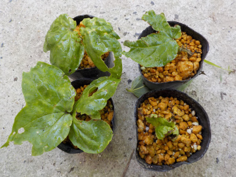
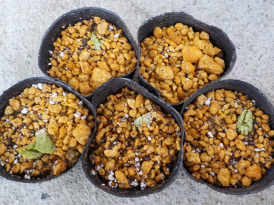
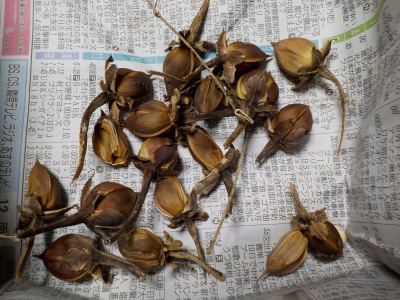
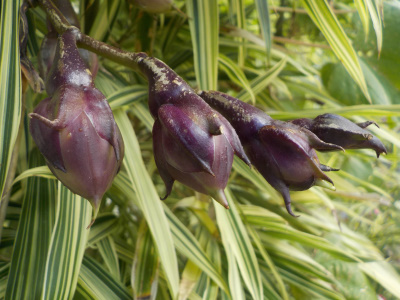
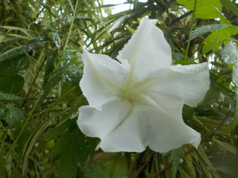
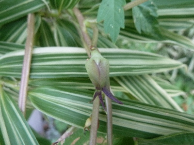
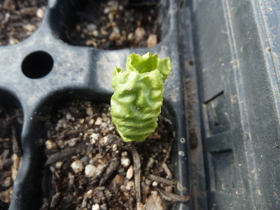
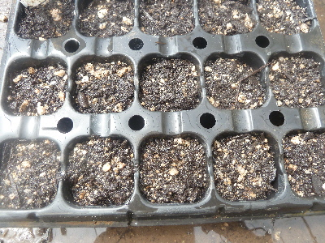

夕顔が何者かに食べられていました。
2019/06/09
地植えじゃないしコンクリートの上なので虫は来ないと思っていました。

食べられました。
この葉っぱは凄くおいしいのかな。
2019/06/09
地植えじゃないしコンクリートの上なので虫は来ないと思っていました。

食べられました。
この葉っぱは凄くおいしいのかな。
2019/05/12
タッパーで発芽させたものをポットに植え替えました。

根っこが伸びてないのでちょっと不安です。
種はいっぱいあったんですが発芽率が悪く、残ったのはこれだけでした。
2018/11/25
今年は18個採れました。

来年は倍増させたいです。
2018/10/07
今年は開花が遅かったですが、ちゃんと種が膨らんでいました。

種が採れそうです。
来年も種まきができそうですね。
何粒取れるかな。
2018/09/09
今年初めて夕顔の花を見ました。

白一色ですが花が大きいので派手でいいです。
来年はもっと早い時期に沢山咲かせたいです。
2018/08/26
植え方に失敗したので、苗の成長が遅かったです。

まだつぼみが小さいです。
今年は花が咲いて種が採れるか不安です。
2018/05/19
夕顔の芽がでました。

葉っぱがシワシワなんですね。
ちょっと不気味。
2018/05/12
去年咲いた花から採取したものを蒔きました。

どうなんるでしょうね？
品種改良とかＦ1とかいってたら去年と同じ花は咲かないんですよね。
どうなるか分らない種を持っていてもしょうがないので、持ってるぶん全部まきました。
何個芽が出て何個育って花が咲くかな。
畑仕事じゃないよ。